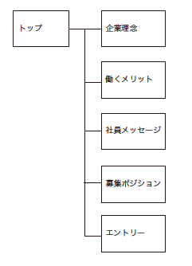

TracKeys（採用サイト）
WEBサイト（PC/タブレット/モバイル）
仮想サイト
※サイト有り
アパレル業界特化型の人材紹介会社の採用サイト
※仮想サイト
媒体
WEBサイト（PC/タブレット/モバイル）
URL
対応範囲
デザイン / カンプ制作 / レイアウト / 画像補正 / コーディング
制作期間
約40時間
使用ツール
Illustrator / Photoshop / Dreamweaver / HTML / CSS / jQuery
サイトの目的・コンセプト
採用サイト外での採用活動の効果最大化
- 求職者に応募企業候補に入れてもらう
- 求職者の志望度向上
- 企業・仕事の理解
ターゲット
アパレル業界からのキャリアチェンジ
他人材紹介会社からの転職
制作フロー
- 競合サイト調査
- ペルソナ策定
- サイトマップ 作成
- デザインラフ作成
- コーディング
1. 競合サイト調査
人材紹介会社の採用サイトを10社程調査。特化型大手総合型人材紹介会社の子会社が多く、独立型企業でも企業サイト内に1ページで求人票を掲載しているのみ。
2. ペルソナ策定
- 28歳女性
- アパレル販売員
- 明るく社交的で献身的。
- 友人いるときはどちらかというと聞き役に徹することが多い。
- 友人は多いが、結婚して家庭を優先する人が増えてきた。
- 仕事は楽しいが、長時間、立ち仕事ということもあり、販売員としてのキャリアに不安を感じている。
- よく使用するデバイス：iPhone
- 趣味：買い物、旅行、友人との飲み会
3. サイトマップ作成
採用サイトは動きの多い派手な傾向があるが、忙しい仕事の合間など、移動中に携帯でみることを想定、より多くの情報を伝えることを重視し、シングルページでシンプルな構造に。また、採用選考の参考になり、かつ面接で言語化しやすいよう文章中心のサイト構成に。
4. ラフデザイン作成
あらゆるアパレルブランドの雰囲気に適応するよう、汎用性のあるシンプルなデザインに。
- シンプル
- 誠実さ
- 落ち着き
カラー
#3777FF
#DAB300
#E0E0E0
UI
エントリーボタンの配置
右手で携帯を持つことを想定し、親指で押しやすいようエントリーボタンは画面右下に配置。また直接応募するためにサイトに訪問した際、最少動作ですむよう、固定配置
その他
トップメイン画像にターゲットの女性を起用モノクロ画像にすることで洗練された印象に。
5. コーディング
コメントを記載することで、記述内容を理解しやすいようにした。
可能な限り画像ではなくCSSで実装し、検索にひっかかりやすいようにした。
PCサイト

タブレットサイト

モバイルサイト

TracKeys（採用サイト）
WEBサイト（PC/タブレット/モバイル）
仮想サイト
※サイト有り
日帰り温泉の紹介サイト
※仮想サイト
媒体
WEBデザインのみ（PC）
URL
対応範囲
デザインのみ（ロゴ含む）
制作期間
約●●時間
使用ツール
Illustrator / Photoshop / XD
コンセプト
高級感がありながらも、気軽に立ち寄りやすい雰囲気
ターゲット
日帰り観光客
制作フロー
- 競合サイト調査
- ペルソナ策定
- サイトマップ 作成
- デザイン作成
1. 競合サイト調査
温泉施設のWEBサイトを5社程調査。
2. ペルソナ策定
- 鎌倉の寺社仏閣の観光に来た観光客
- 湘南エリアでのマリンスポーツ・海水用帰りの方
- 20〜30代の社会人
- 観光、平日の仕事で疲れた体を癒しに来る方
- お泊まりは難しいが、日帰りで観光を楽しみたい神奈川県近郊からの観光客
3. サイトマップ作成
鎌倉などの観光のついでに利用することを想定し、営業時間やアクセス、料金表など基本情報を伝えることを重視。シングルページで各情報への導線を最小限に
4. デザイン作成
あらゆるアパレルブランドの雰囲気に適応するよう、汎用性のあるシンプルなデザインに。
- シンプル
- 誠実さ
- 落ち着き
カラー
#3777FF
#DAB300
#E0E0E0
UI
エントリーボタンの配置
右手で携帯を持つことを想定し、親指で押しやすいようエントリーボタンは画面右下に配置。また直接応募するためにサイトに訪問した際、最少動作ですむよう、固定配置
その他
トップメイン画像にターゲットの女性を起用モノクロ画像にすることで洗練された印象に。
PCサイト
タブレットサイト
モバイルサイト
TracKeys（採用サイト）
WEBサイト（PC/タブレット/モバイル）
仮想サイト
※サイト有り
TracKeys（採用サイト）
WEBサイト（PC/タブレット/モバイル）
仮想サイト
※サイト有り
TracKeys（採用サイト）
WEBサイト（PC/タブレット/モバイル）
仮想サイト
※サイト有り